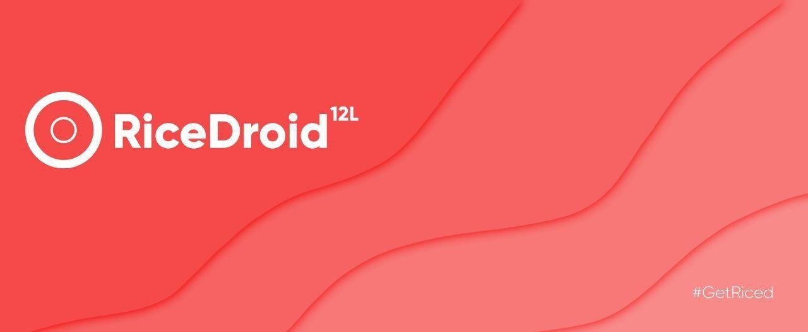

Ginkgo's
Port
Beranda
Menu
Lainnya
Bantuan
Tentang Kami
RiceDroid 5.0
| HaloHalo

Changelog
Device Changelog
Upstreamed kernel to v4.14.246 (android-4.14-stable)
Updated MIUI blobs to V12.0.2.0.RCOMIXM
Fixed random reboots during widevine L1 playback
Removed widevine firmware hack, R firmware is mandatory
Boost I/O during bootup to improve boot speed
Boost CPU during wake for faster faceunlock
Increased default f2fs checkpoint interval
Increased hispeed freq for big cluster
Disabled conservative PL boost
Reverted AOSP's old VM settings tweaks
Misc optimizations and fixes in kernel
Fixed safetynet CTS profile for all
Added LCD HBM and CABC in XiaomiParts
Added missing qti_whitelist sysconfig
Disabled useless cnss-diag service
Improved schedutil governor ratelimits
Updated clear speaker audio from MIUI12
Removed notification and battery LED settings on willow
Removed TM symbol in kernel name (required by some apps)
Merged LA.UM.9.11.r1-04700.02 CAF tag in kernel
Fixed IR sensor
Enabled idle_state mechanism
Checkout audio policy config from MIUI Global Stable
Implemented vibration control under Sound settings
Dan source changelog bisa diakses
disini
Update pada 28/08/'22
Pengembang
(Telegram)
@Razs_19
Credit
(Telegram)
@ghostrider_reborn for resources
@k_shizaki for testing
@OptimussPriime
Download Ricedroid 5.0 Android 12L Versi GApps
Download
Download
Ini akan mengarahkan ke link download..